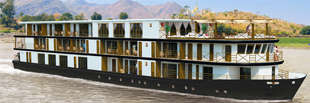
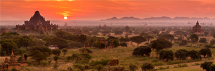

Named after the beautiful Ananda Temple in Bagan, Ananda also translates in Sanskrit as 'extreme happiness' - one of the highest states of being. Step aboard the beautiful Sanctuary Ananda and be transported into a world of luxury and comfort with all modern amenities expected and welcomed by staff who are gracious and warming. Sanctuary Ananda will take you on the most incredible journeys through this fascinating country, experience the serenity and beauty of life on the river. She is being custom built for the Myanmar Rivers by local shipbuilders using age-old knowledge and traditional materials while incorporating the most modern technology. She has a shallow draft so that she can navigate both the Upper and Lower Ayeyarwady and Chindwin Rivers. The design of the ship is elegant and contemporary with a fusion of the traditional Burmese handicrafts with local fabrics, wood and lacquerware adorn each suite. Sanctuary Ananda will sail every day on each itinerary, offering plenty of time to combine the 'must see sights' with smaller villages to meet the indigenous peoples and see local crafts being made first hand. From spectacular temples, beautiful monasteries and ancient archaeological sites to the varied landscapes, Myanmar is a country just waiting to be discovered. Sanctuary Ananda will commence sailing in late 2014.
|

Myanmar & the IrrawaddyYangon | Heho | Mandalay | Bagan |

Signature Myanmar & the IrrawaddyYangon | Heho | Mandalay | Bagan |

Duration: 10 Days/ 9 Nights
Explore the untouched Myanmar, experience the tranquil Inle Lake, cruise through the Irrawaddy River on new Sanctuary 'Ananda' and enjoy a hot air balloon ride over Bagan and its countless pagodas and temples.
Yangon | Heho | Mandalay | Bagan
After your arrival in Yangon, you are met by an A&K representative and escorted to your hotel.
Overnight: Sule, Shangri-La, Yangon
Begin your journey of Myanmar, a profoundly Buddhist country with many prevailing ancient traditions, with a walking tour of the vibrant Chinatown, its streets filled with wooden shuttered houses, shops and food stalls, with an uncrowded and authentic atmosphere.
Further, view the Musmeah Yeshua, a colonial relic and the last remaining Jewish synagogue in Myanmar, strategically located in the heart of city center. Experience the lively culture with a walk through the bazaar at Scott Market (Bogyoke Market) amid shops filled with antiques, old coins, Burmese jade and handicrafts.
Later, enjoy lunch at a local restaurant before you visit the Reclining Buddha at Chauk Htat Gyi Pagoda, about the height of a five storey building with an expressive enamel face. Read the story of the Buddha's life embossed on the soles of the statue's staggered feet. Continue to explore the Buddhist culture with a visit to the 2,600 years old Shwedagon Pagoda, the most sacred Buddhist site in Myanmar. Visit this oldest historical pagoda in the world and admire its round, gilded stupa capturing the rays of the warm afternoon sun, lending a crowning moment to your Burmese adventure.
Conclude your day with a warm welcome dinner at Le Planteur Restaurant.
Overnight: Sule, Shangri-La, Yangon
Meal Plan: B, L, D
Today, take a flight to Heho and after arrival enjoy lunch at a local restaurant. Later, take a transfer to the scenic Inle Lake and further to your resort, by private boat.
Continue to Visit the splendid Phaung Daw Oo Pagoda, which houses iconic Buddha figures covered in gold leaf and further attend a traditional silk-weaving workshop for a display of the masterful skills of the local artists.
This evening, enjoy dinner at your hotel.
Overnight: Inle Lake View Resort
Meal Plan: B, L, D
Enjoy your breakfast and head for a visit to the Five-Day Market to observe the regional hill tribe-people in traditional dress bartering for goods and produce. En-route visit a blacksmith’s workshop followed by a visit to an authentic Artisan, where you experiment with making a cheroot (Burmese cigar).
This afternoon, savor lunch at the Intha Heritage House, serving authentic Intha dishes from recipes running from generations and made with locally grown organic vegetables. Proceed to explore the ingenious floating gardens of Inle Lake before you visit the Nga Phe Kyaung Monastery, famed for its beautiful Buddha images.
Be a spectator to a private Intha boat race, while sipping the afternoon tea. Appreciate the coordinated efforts put in by the 20 participants per boat, each using the traditional single-leg rowing technique, which is still prevalent with some of the local fishermen .Later, travel back to your hotel for dinner.
Overnight: Inle Lake View Resort
Meal Plan: B, L, D
This morning, depart for Mandalay to view the Mahamuni Pagoda, home to a golden statue that was cast in the presence of the Gautama Buddha and is said to present his one true likeness.
Continue to visit the historic Shwenandaw Monastery at Kuthodaw Pagoda, with the more than 700 marble slabs inscribed with Buddhist religious texts, referred to by some as the biggest book in the world.
Later, embark the luxurious all-balcony Sanctuary 'Ananda,' your home for a four-night cruise upon the timeless Irrawaddy River. Enjoy lunch before you disembark to visit Amarapura, with its textile workshops, and Sagaing, renowned for its monasteries, pagodas and nunneries.
Further, ride on a local boat to arrive at the U Bein Bridge for a splendid scenic Sundowner. Tonight, board the ship for cocktails and dinner.
Overnight: Sanctuary 'Ananda'
Meal Plan: B, L, D
Wake up this morning for a meditation or yoga session on deck before breakfast. Then, set out to visit Mingun, where you view the monumental Mingun Temple, a colossal unfinished stupa that towers the surrounding landscape.
Also view the 90-ton Mingun Bell, one of the world's heaviest ringing bells. Later, return to the ship and cruise southward to Bagan.
Overnight: Sanctuary 'Ananda'
Meal Plan: B, L, D
Start you day with an early morning today for yoga and meditation session on deck or enjoy breakfast at leisure before you exit the cruise to ride a trishaw to the Pakokku Village. Experience the culture with a stroll through the local market and the traditional shoe and cheroot factories.
This afternoon, enjoy lunch on board and later, travel ashore to tour Bagan and Myinkaba village, famous for its lacquerware created by local artisans using ancient local techniques. En-route visit the beautifully symmetrical Pyathatgyi Temple, with its majestic red brick architecture.
Later, return to the ship for dinner, while you enjoy a traditional Burmese musical performance.
Overnight: Sanctuary 'Ananda'
Meal Plan: B, L, D
Today, Set off for an early exciting balloon ride over Bagan as the rising sun illuminates the gold- and sand-colored stupas. Later, disembark at Sale to closely observe the beautifully crafted reliefs at a local monastery and the revered bamboo Buddha image at Thartana Yaunggyi Temple.
Enjoy lunch on board before you cruise back to Bagan to visit a monastery inside Ananda Temple, adorned with murals depicting medieval Burmese life.
Next is a beautiful drive to the cave temple in Gubyaukgyi, to behold its pyramidal spire. Further, ride a horse cart to return to the ship, where you savor a traditional Shan dinner with the captain and your fellow guests.
Overnight: Sanctuary 'Ananda'
Meal Plan: B, L, D
This day, disembark the cruise for a flight to Yangon to explore the National Museum of Myanmar, a treasure trove of Burmese arts and culture. Further, visit the 2,500 years old golden Sule Pagoda.
This afternoon, join your fellow travelers to conclude the journey with a farewell lunch. Tonight, transfer to the airport for your onward flight or you may choose to stay at your hotel for the night for no additional cost.
Overnight: Sule, Shangri-La, Yangon
Meal Plan: B, L
After breakfast, transfer to the airport for your departing flight.
Meal Plan: B
Available on the Dec 18 (2014), Jan 27, Feb 3, Feb 7, Feb 17, Mar 7, Apr 7, Oct 12, Oct 16 and Dec 22 departures.
After your arrival at Bangkok, you are met by an A&K representative and escorted to your hotel.
The rest of the day is for you to explore the place.
Overnight: Novotel Suvarnabhumi Hotel
Today, catch a flight to Luang Prabang, Laos, an outstanding example of the fusion of traditional architecture and Lao urban structures. After arrival, you will be assisted with transfer to your hotel.
Begin your journey to explore the monasteries of Wat Xiengthong, Wat Khili with its rare spectacular architecture and Wat Sene.
Later, experience the culture in-depth by attending a village baci ceremony, an ancient sacred tradition in Laos.
Overnight: Luang Say Residence/Belmond La Residence Phouvao
Meal Plan: B, D
This day, join the locals making food offerings to local monks. Continue to visit a farm and then the truly spectacular and crystal clear Kuangsi Waterfall before you embark on a cruise to view the scenic sunset.
This day, set out on a tour of the majestic Royal Palace. Continue for a hike on the Phousi Hill (Sacred Hill), the geographical and spiritual center of the city, to enjoy the spectacular views from its peak. Later, visit the Traditional Art and Ethnology Center.
Overnight: Luang Say Residence/Belmond La Residence Phouvao
Meal Plan: B, L
Depart for Yangon to begin with your Myanmar journey.
Overnight: Angkor Wat Post-Tour Extension
Meal Plan: B
Available on the Jan 17, Jan 27, Feb 3, Feb 17, Mar 10, Oct 5, Dec 15 and Dec 22 departures.
After your arrival in Siem Reap, Cambodia, you will be met by an A&K representative and assisted to your hotel. Begin the journey with a visit to Angkor Thom, a masterpiece of the Khmer empire. Continue to visit the richly decorated Khmer temple, The Bayon, with its beguiling 172 large-scale faces.
Later, visit the impressive Terrace of the Elephants before you explore the Leper King Terrace.
Overnight: Raffles Grand Hotel D'Angkor
Today, visit the beautiful Ta Prohm Temple, bound by massive roots of huge trees, followed by Angkor National Museum, dedicated to the collection, preservation and presentation of Angkorian artifacts.
Enjoy your lunch and later ride on a tuk-tuk to explore the glorious Angkor Wat until sunset.
Overnight: Raffles Grand Hotel D'Angkor
Meal Plan: B, L
Set off to explore the jungle-ravaged Beng Mealea and Banteay Srei, renowned for its intricate decoration carved in pinkish sandstone that covers the walls like tapestry.
End the day with a visit to Sam's Brothers Clean Water Project site, an AKP-supported project, aimed to bring clean water to local families and their communities in the countryside of Cambodia.
Overnight: Raffles Grand Hotel D'Angkor
Meal Plan: B, L
After the morning at leisure, depart for Bangkok, Thailand. Transfer to your hotel.
After your arrival, you are met by an A&K representative and escorted to the hotel.
Overnight: Novotel Suvarnabhumi Airport Hotel
Meal Plan: B, D
After breakfast, transfer to the airport for your onward flight.
Meal Plan: B
Duration: 10 Days/ 9 Nights
Journey to untouched Myanmar to experience tranquil Inle Lake, cruise the Irrawaddy River on new Sanctuary 'Ananda' and enjoy a hot air balloon ride over Bagan and its countless pagodas and temples.
Yangon | Heho | Mandalay | Bagan
After your arrival in Yangon, you are met by an A&K representative and escorted to your hotel.
Overnight: Sule, Shangri-La, Yangon
Begin your journey of Myanmar, a profoundly Buddhist country with many prevailing ancient traditions, with a walking tour of the vibrant Chinatown, its streets filled with wooden shuttered houses, shops and food stalls, with an uncrowded and authentic atmosphere.
Further, view the Musmeah Yeshua, a colonial relic and the last remaining Jewish synagogue in Myanmar, strategically located in the heart of city center. Experience the lively culture with a walk through the bazaar at Scott Market (Bogyoke Market) amid shops filled with antiques, old coins, Burmese jade and handicrafts.
Later, enjoy lunch at a local restaurant before you visit the Reclining Buddha at Chauk Htat Gyi Pagoda, about the height of a five storey building with an expressive enamel face. Read the story of the Buddha's life embossed on the soles of the statue's staggered feet. Continue to explore the Buddhist culture with a visit to the 2,600 years old Shwedagon Pagoda, the most sacred Buddhist site in Myanmar. Visit this oldest historical pagoda in the world and admire its round, gilded stupa capturing the rays of the warm afternoon sun, lending a crowning moment to your Burmese adventure.
Overnight: Sule, Shangri-La, Yangon
Meal Plan: B, L
Fly to Heho, after arrival travel to the scenic Inle Lake and further to your resort, by private boat. View Phaung Daw Oo Pagoda, which houses iconic Buddha figures covered in gold leaf. Further attend a traditional silk-weaving workshop for a display of the masterful skills of the local artists.
Overnight: Inle Lake View Resort
Meal Plan: B, L
Enjoy your breakfast and head for a visit to the Five-Day Market to observe the regional hill tribe-people in traditional dress bartering for goods and produce. En-route visit a blacksmith’s workshop followed by a visit to an authentic Artisan, where you experiment with making a cheroot (Burmese cigar).
This afternoon, savor your lunch and proceed to explore the ingenious floating gardens of Inle Lake before you visit the Nga Phe Kyaung Monastery, famed for its beautiful Buddha images.
Overnight: Inle Lake View Resort
Meal Plan: B, L
This morning, depart for Mandalay to view the Mahamuni Pagoda, home to a golden statue that was cast in the presence of the Gautama Buddha and is said to present his one true likeness.
Continue to visit the historic Shwenandaw Monastery at Kuthodaw Pagoda, with the more than 700 marble slabs inscribed with Buddhist religious texts, referred to by some as the biggest book in the world.
Later, embark the luxurious all-balcony Sanctuary 'Ananda,' your home for a four-night cruise upon the timeless Irrawaddy River. Enjoy lunch before you disembark to visit Amarapura, with its textile workshops, and Sagaing, renowned for its monasteries, pagodas and nunneries.
Further, ride on a local boat to arrive at the U Bein Bridge for a splendid scenic Sundowner.
Overnight: Sanctuary 'Ananda'
Meal Plan: B, L, D
This day, set out to visit Mingun, where you view the monumental Mingun Temple, a colossal unfinished stupa that towers the surrounding landscape.
Also view the 90-ton Mingun Bell, one of the world's heaviest ringing bells. Later, return to the ship and cruise southward to Bagan.
Overnight: Sanctuary 'Ananda'
Meal Plan: B, L, D
Start you day with an early morning today for yoga and meditation session on deck or enjoy breakfast at leisure before you exit the cruise to ride a trishaw to the Pakokku Village. Experience the culture with a stroll through the local market and the traditional shoe and cheroot factories.
This afternoon, enjoy lunch on board and later, travel ashore to tour Bagan and Myinkaba village, famous for its lacquerware created by local artisans using ancient local techniques. En-route visit the beautifully symmetrical Pyathatgyi Temple, with its majestic red brick architecture.
Overnight: Sanctuary 'Ananda'
Meal Plan: B, L, D
Today, Set off for an early exciting balloon ride over Bagan as the rising sun illuminates the gold- and sand-colored stupas. Later, disembark at Sale to closely observe the beautifully crafted reliefs at a local monastery and the revered bamboo Buddha image at Thartana Yaunggyi Temple.
Cruise back to Bagan to visit a monastery inside Ananda Temple, adorned with murals depicting medieval Burmese life. Next is a beautiful drive to the cave temple in Gubyaukgyi, to behold its pyramidal spire. Further, ride a horse cart to return to the ship
Overnight: Sanctuary 'Ananda'
Meal Plan: B, L, D
This day, disembark the cruise for a flight to Yangon to explore the National Museum of Myanmar, a treasure trove of Burmese arts and culture. Further, visit the 2,500 years old golden Sule Pagoda.
Overnight: Sule, Shangri-La, Yangon
Meal Plan: B, L
After breakfast, transfer to the airport for your departing flight.
Meal Plan: B